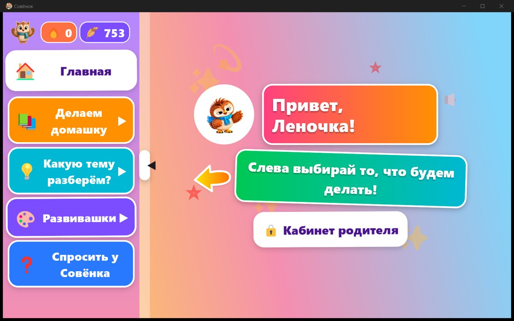
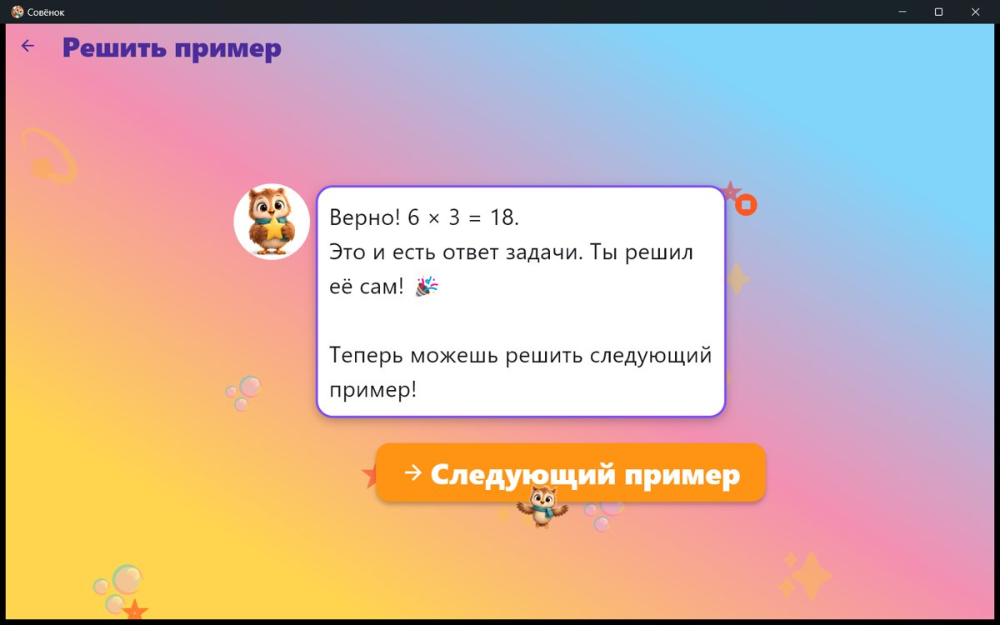
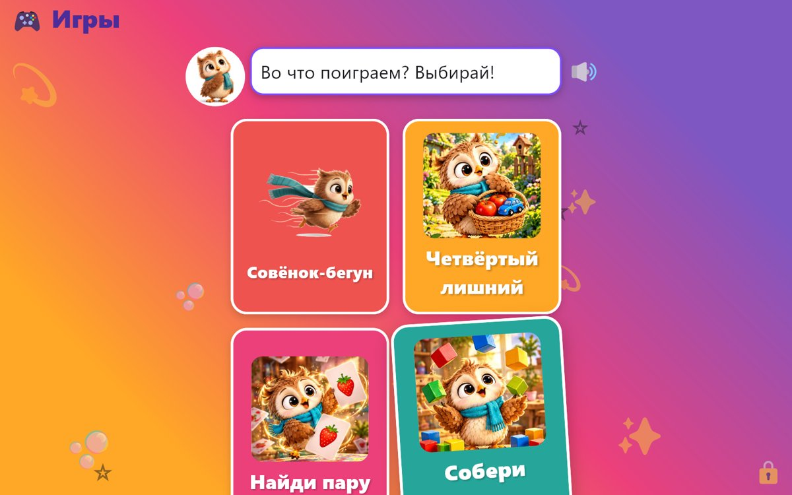

Говорящий помощник с домашкой для детей 0–4 класса. По программе Казахстана, на русском и казахском.
Совёнок не делает домашку за ребёнка — он помогает решить самостоятельно: ребёнок называет задание голосом или печатает, а Совёнок ведёт по шагам, подсказывает и хвалит.



19 900 ₸
Бессрочная лицензия на 1 компьютер. Покупка один раз, без подписки и скрытых платежей. Перед покупкой — 3 дня бесплатно.
Microsoft StoreTelegram-каналТовар цифровой, доставляется в электронном виде, без материального носителя.
Подробно — в договоре публичной оферты, раздел 6. Покупки в Microsoft Store возвращаются по правилам Microsoft.
| Система | Windows 10 или 11, 64-бит |
| Место на диске | около 6 ГБ |
| Память | от 4 ГБ |
| Интернет | нужен для скачивания и активации; дальше основные функции работают без интернета |
| Продавец | ИП «INFOCODE.kz» (Есендавлетова Айгерим Сагатовна) |
| ИИН, банковские реквизиты | указаны в договоре публичной оферты, раздел 10 |
| Адрес | Казахстан, г. Караганда, ул. Сатыбалдина, д. 27, кв. 3 |
| Телефон / WhatsApp | +7 701 918 5254 |
| Электронная почта | admin@infocode.kz |
| Telegram | t.me/sovyonok_kz |